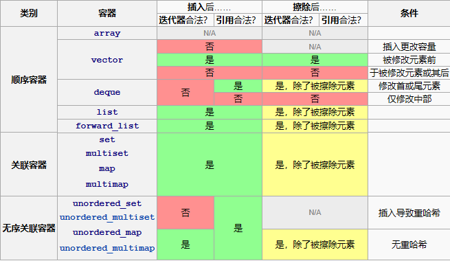

容器库
顺序容器
顺序容器实现能按顺序访问的数据结构。
| 容器名称 | 数据结构 |
|---|---|
std::array | 静态连续数组 |
std::vector | 动态连续数组 |
std::deque | 双端队列 |
std::forward_list | 单链表 |
std::list | 双链表 |
关联容器
关联容器实现能快速查找（ O(log n) 复杂度）的数据结构。
| 容器名称 | 描述 |
|---|---|
| set | 唯一键的集合，按照键排序 |
| map | 键值对的集合，按照键排序，键是唯一的 |
| multiset | 键的集合，按照键排序 |
| multimap | 键值对的集合，按照键排序 |
无序关联容器
无序关联容器提供能快速查找（均摊 O(1) ，最坏情况 O(n) 的复杂度）的无序（哈希）数据结构。
| 容器名称 | 描述 |
|---|---|
| unordered_set | 唯一键的集合，按照键生成散列 |
| unordered_map | 键值对的集合，按照键生成散列，键是唯一的 |
| unordered_multiset | 键的集合，按照键生成散列 |
| unordered_multimap | 键值对的集合，按照键生成散列 |
容器适配器
容器适配器提供顺序容器的不同接口。
| 容器名称 | 描述 |
|---|---|
| stack | 适配一个容器以提供栈（LIFO 数据结构） |
| queue | 适配一个容器以提供队列（FIFO 数据结构） |
| priority_queue | 适配一个容器以提供优先级队列 |
span
span 是相接的对象序列上的非占有视图，某个其他对象占有序列的存储。
| 容器名称 | 描述 |
|---|---|
| span | 对象的连续序列上的无所有权视图 |
迭代器非法化

线程安全
- 多个线程可并发调用不同容器的任意成员函数，标准库函数仅通过参数（含 this 指针）访问对象，不会非法访问其他线程的对象。
- 多个线程可并发调用同一容器的 const 成员函数，以及 begin、end、find、at 等具有只读语义的非 const 成员函数，此类操作不会引发数据竞争。
- 多个线程可并发修改同一容器内的不同元素，
std::vector<bool>除外。 - 迭代器的只读操作（如自增、解引用）可与其他只读操作并发执行；任何导致迭代器失效的修改操作，均不可与现存迭代器操作并发执行。
- 标准库函数仅访问其参数直接指向的对象，不会间接访问容器内其他无关元素，不同函数可安全修改各自对应的元素。
- 标准库容器、算法及函数可在内部实现并行化处理，前提是不改变用户可见的执行结果。